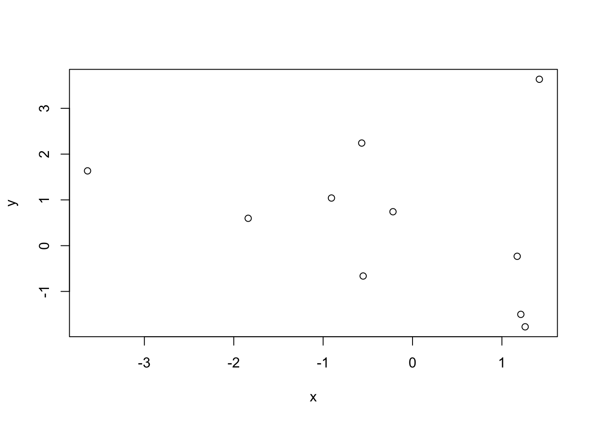
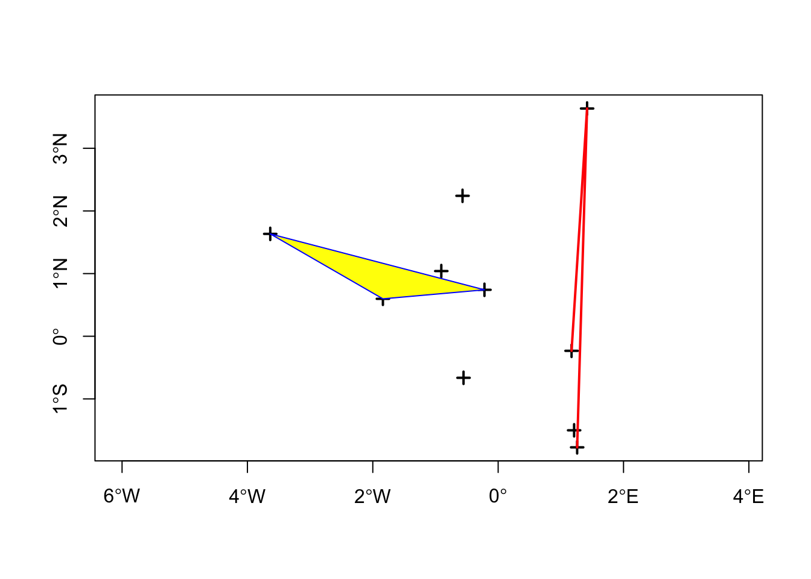
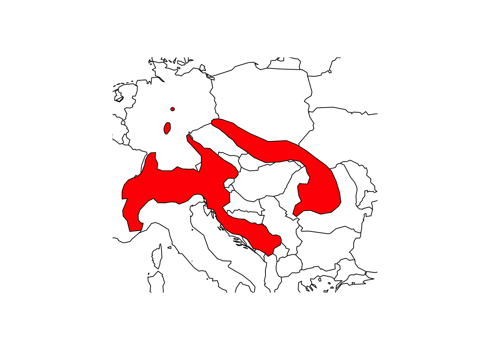
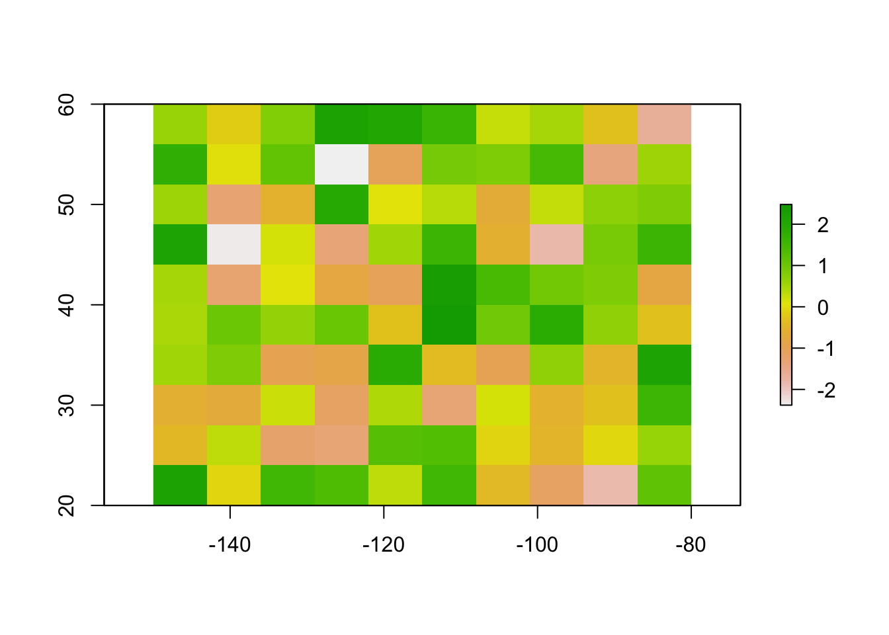
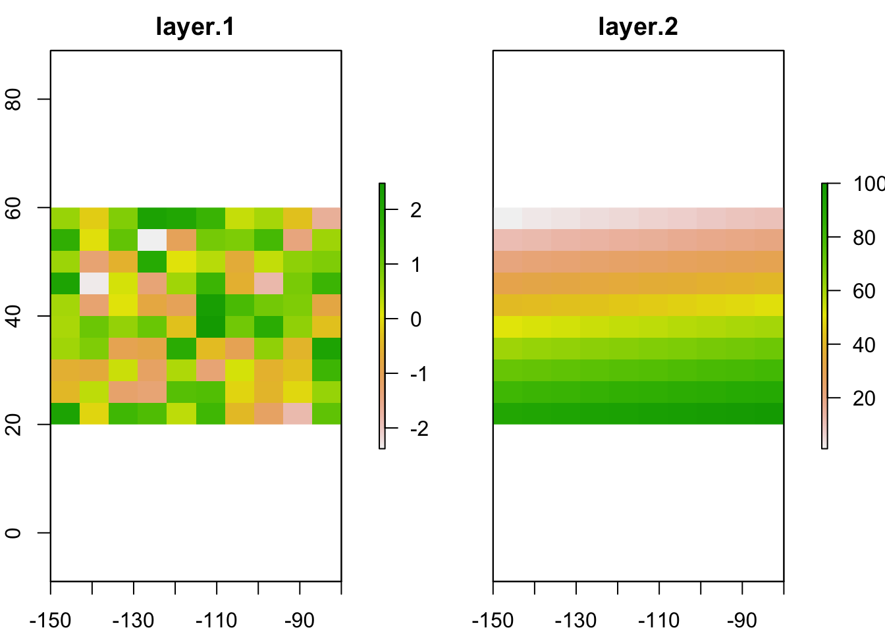
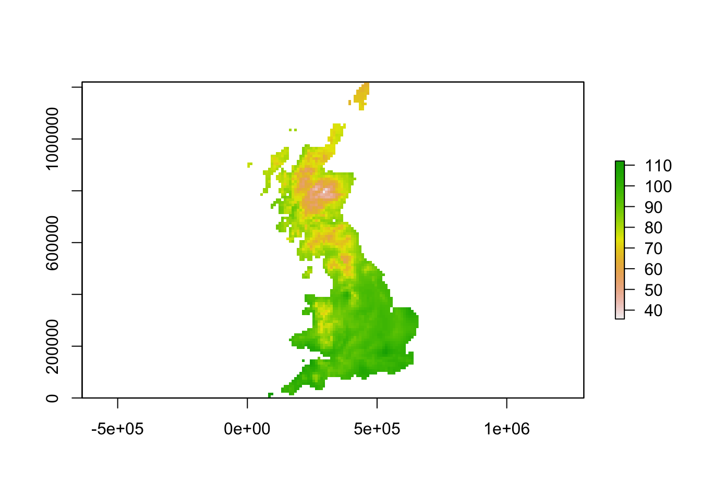
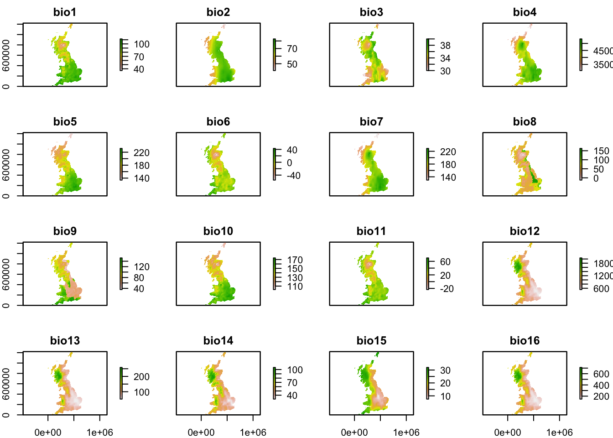
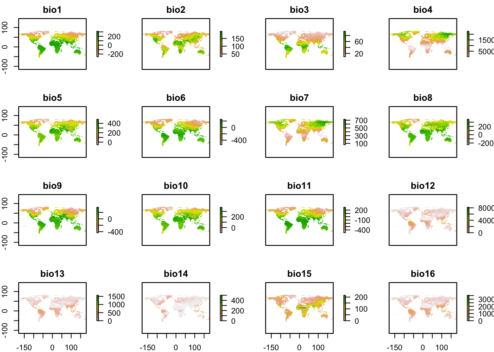
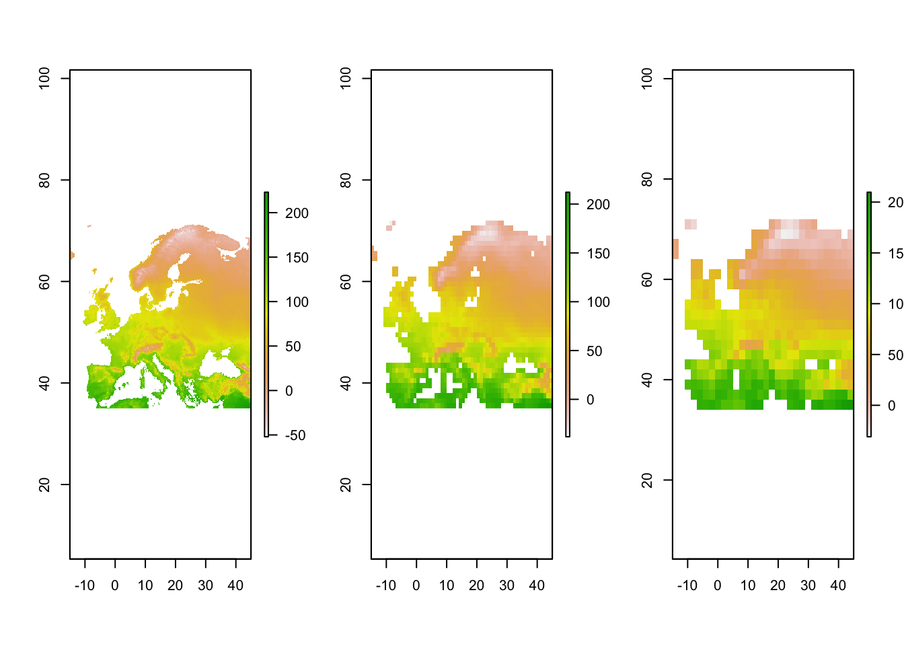
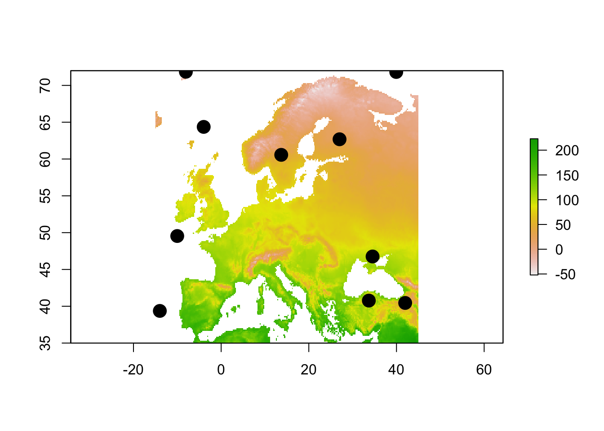

RStudio project
Open the RStudio project that we created in the previous session. I recommend to use this RStudio project for the entire course and within the RStudio project create separate R scripts for each session.
# Session 2: Spatial data in R and save the file in your folder “scripts” within your project folder, e.g. as “2_SpatialData.R”In this course, we will deal a lot with geospatial data. Nowadays, R offers a lot of GIS functionalities in different packages.
If you work on a Windows machine, then installing and using these packages should be straight forward. If you are working on a Mac, you will need to install the GDAL software first. Here are some instructions for doing so:
We will use a number of new R packages. Remember that we can install new packages with the function install.packages(). Make sure also to install the dependencies.
install.packages(c('sp','raster'), dep=T)Spatial data are typically stored as either vector data or raster data (With 2019). Discrete objects with clear boundaries are usually represented by vector data (e.g. individual trees, roads, countries) while continuous phenomena without clear boundaries are usually represented by raster data (e.g. elevation, temperature).
Vector data can be mapped a points, lines, and polygons:
By contrast, Raster data represent the landscape as a regularly spaced grid and are used to represent data that vary continuously across space such as elevation, temperature or NDVI. Raster cells can contain numeric values (e.g. elevation) or categorical values (e.g. land cover type). The coordinate information is stored differently from vector data because storing the coordinates for each grid cell in the raster would use too much storage space. To define a raster, we only need to know the coordinates of one corner, the spatial extent and the spatial resolution to infer the coordinates of each cell.
The package sp defines a set of classes to represent spatial vector data and perform spatial data analyses. In this package, the geometries of vector data are stored as SpatialPoints, SpatialLines and SpatialPolygons, and their attributes are stored within SpatialPointsDataFrame, SpatialLinesDataFrame and SpatialPolgyonsDataFrame
For more detailed tutorials see https://rspatial.org.
For illustration, we will generate some random points data and convert them into Spatial* objects.
# We set a seed for the random number generator, so that we all obtain the same results
set.seed(12345)
coords = cbind(
x=rnorm(10, sd=2),
y=rnorm(10, sd=2)
)
str(coords)## num [1:10, 1:2] 1.171 1.419 -0.219 -0.907 1.212 ...
## - attr(*, "dimnames")=List of 2
## ..$ : NULL
## ..$ : chr [1:2] "x" "y"plot(coords)
We now convert the random points into a SpatialPoints object and inspect it.
library(sp)
# Convert into SpatialPoints
sp = SpatialPoints(coords)
# Check out the object
class(sp)## [1] "SpatialPoints"
## attr(,"package")
## [1] "sp"# Inspect the (spatial) information in the object:
showDefault(sp)## An object of class "SpatialPoints"
## Slot "coords":
## x y
## [1,] 1.1710576 -0.2324956
## [2,] 1.4189320 3.6346241
## [3,] -0.2186066 0.7412557
## [4,] -0.9069943 1.0404329
## [5,] 1.2117749 -1.5010640
## [6,] -3.6359119 1.6337997
## [7,] 1.2601971 -1.7727150
## [8,] -0.5523682 -0.6631552
## [9,] -0.5683195 2.2414253
## [10,] -1.8386440 0.5974474
##
## Slot "bbox":
## min max
## x -3.635912 1.418932
## y -1.772715 3.634624
##
## Slot "proj4string":
## CRS arguments: NA# The raster package also provides a nicer print summary, so we load it as well:
library(raster)
sp## class : SpatialPoints
## features : 10
## extent : -3.635912, 1.418932, -1.772715, 3.634624 (xmin, xmax, ymin, ymax)
## crs : NAThe slot bbox describes the bounding box around the known coordinates and the slot proj4string stores the coordinate reference system (“CRS”). In our case, no CRS was provided. We can explicitly add a CRS when creating the SpatialPoints object:
sp = SpatialPoints(coords, proj4string=CRS('+proj=longlat +datum=WGS84'))
sp## class : SpatialPoints
## features : 10
## extent : -3.635912, 1.418932, -1.772715, 3.634624 (xmin, xmax, ymin, ymax)
## crs : +proj=longlat +datum=WGS84 +no_defsNext, we can generate a SpatialPointsDataFrame containing additional information (or attributes) for each point. Let’s assume the spatial points are trees, either of three species.
# Create attribute table
(data=data.frame(ID=1:10,species=sample(c('beech','oak','birch'),10,replace=T)))## ID species
## 1 1 oak
## 2 2 oak
## 3 3 birch
## 4 4 beech
## 5 5 beech
## 6 6 birch
## 7 7 oak
## 8 8 beech
## 9 9 beech
## 10 10 birch# Create SpatialPointsDataFrame
(spdf = SpatialPointsDataFrame(sp, data))## class : SpatialPointsDataFrame
## features : 10
## extent : -3.635912, 1.418932, -1.772715, 3.634624 (xmin, xmax, ymin, ymax)
## crs : +proj=longlat +datum=WGS84 +no_defs
## variables : 2
## names : ID, species
## min values : 1, beech
## max values : 10, oak# To see what is inside
str(spdf)## Formal class 'SpatialPointsDataFrame' [package "sp"] with 5 slots
## ..@ data :'data.frame': 10 obs. of 2 variables:
## .. ..$ ID : int [1:10] 1 2 3 4 5 6 7 8 9 10
## .. ..$ species: chr [1:10] "oak" "oak" "birch" "beech" ...
## ..@ coords.nrs : num(0)
## ..@ coords : num [1:10, 1:2] 1.171 1.419 -0.219 -0.907 1.212 ...
## .. ..- attr(*, "dimnames")=List of 2
## .. .. ..$ : NULL
## .. .. ..$ : chr [1:2] "x" "y"
## ..@ bbox : num [1:2, 1:2] -3.64 -1.77 1.42 3.63
## .. ..- attr(*, "dimnames")=List of 2
## .. .. ..$ : chr [1:2] "x" "y"
## .. .. ..$ : chr [1:2] "min" "max"
## ..@ proj4string:Formal class 'CRS' [package "sp"] with 1 slot
## .. .. ..@ projargs: chr "+proj=longlat +datum=WGS84 +no_defs"The structure of SpatialLines and SpatialPolygons objects is analogous to SpatialPoints. We use the functions spLines() and spPolygons() from the raster package to creates these objects.
# Create SpatialLines through all oak trees in the data
lns <- spLines(subset(spdf,species=='oak'), crs=CRS('+proj=longlat +datum=WGS84'))
# Create SpatialPolygons for all birch trees in the data
pols <- spPolygons(subset(spdf,species=='birch'), crs=CRS('+proj=longlat +datum=WGS84'))Finally, let’s plot our point, line and polygon data.
plot(sp, axes=T, lwd=2)
plot(lns, add=T, col='red', lwd=2)
plot(pols, border='blue',col='yellow',add=T)
Most often, vector data are stored as shapefiles. Download the zip folder containg IUCN range data of the Alpine Shrew to your data folder and unzip it. You will see that several files are contained in this folder. All of these are necessary parts of the shapefile and contain the different information on geometry and attributes.
We use the raster package to read in the data:
(shrew <- shapefile('data/IUCN_Sorex_alpinus.shp'))## class : SpatialPolygonsDataFrame
## features : 1
## extent : 5.733728, 26.67935, 42.20601, 51.89984 (xmin, xmax, ymin, ymax)
## crs : +proj=longlat +datum=WGS84 +no_defs
## variables : 27
## names : id_no, binomial, presence, origin, seasonal, compiler, yrcompiled, citation, source, dist_comm, island, subspecies, subpop, legend, tax_comm, ...
## value : 29660, Sorex alpinus, 1, 1, 1, IUCN, 2008, IUCN (International Union for Conservation of Nature), NA, NA, NA, NA, NA, Extant (resident), NA, ...# Plot Central Europe
library(maps)
map('world',xlim=c(5,30), ylim=c(40,55))
# Overlay the range of the Alpine Shrew
plot(shrew, col='red', add=T)
We will use the raster package to represent and analyse raster data in R. The package contains different raster data classes, most important for this course are RasterLayer, RasterStack and RasterBrick. RasterLayer contain only a single layer of raster information while RasterStack and RasterBrick can contain multiple layers (from separate files or from a single multi-layer file, respectively).
The function raster() can be used to create or read in RasterLayer objects.
(r1 <- raster(ncol=10, nrow=10, xmx=-80, xmn=-150, ymn=20, ymx=60))## class : RasterLayer
## dimensions : 10, 10, 100 (nrow, ncol, ncell)
## resolution : 7, 4 (x, y)
## extent : -150, -80, 20, 60 (xmin, xmax, ymin, ymax)
## crs : +proj=longlat +datum=WGS84 +no_defsWe can access the attributes of each grid cell by using the function values(). Obviously, there are no values yet in the RasterLayer object and thus we assign some randomly.
summary(values(r1))## Mode NA's
## logical 100values(r1) <- rnorm(ncell(r1))
# plot the raster
plot(r1)
A RasterStack can be created or read in using the function stack().
# Create another RasterLayer and assign values
r2 <- r1
values(r2) <- 1:ncell(r2)
# Stack the raster layers
(r <- stack(r1,r2))## class : RasterStack
## dimensions : 10, 10, 100, 2 (nrow, ncol, ncell, nlayers)
## resolution : 7, 4 (x, y)
## extent : -150, -80, 20, 60 (xmin, xmax, ymin, ymax)
## crs : +proj=longlat +datum=WGS84 +no_defs
## names : layer.1, layer.2
## min values : -2.380358, 1.000000
## max values : 2.477111, 100.000000plot(r)
In most cases, we will read in raster data from file. For this we can use the same commands as above, raster() for reading in single-layer raster files and stack() or brick() for reading in multi-layer raster files.
First, download the temperature map for UK here to your data folder and read it in. The raster layer represents the mean annual in temperature [°C * 10].
(temp <- raster('data/UK_temp.tif'))## Warning in showSRID(uprojargs, format = "PROJ", multiline = "NO", prefer_proj
## = prefer_proj): Discarded datum Unknown based on Airy 1830 ellipsoid in CRS
## definition## class : RasterLayer
## dimensions : 122, 66, 8052 (nrow, ncol, ncell)
## resolution : 10000, 10000 (x, y)
## extent : 0, 660000, 0, 1220000 (xmin, xmax, ymin, ymax)
## crs : +proj=tmerc +lat_0=49 +lon_0=-2 +k=0.9996012717 +x_0=400000 +y_0=-100000 +ellps=airy +units=m +no_defs
## source : /Users/zurell/data/Lehre/UP_Lehre/EEC/Macroecology/Pracs_Macro/macro-course/data/UK_temp.tif
## names : UK_temp
## values : 35.71785, 112 (min, max)plot(temp)
Second, download the zip folder containing multi-layer raster data for 19 bioclimatic variables of UK, and unzip in your data folder. It contains two files. The file ending “*.grd” represents the natural file ending for files created using the raster package. It needs to be accompanied by a file ending on “*.gri”, which contains all the cell attributes. The bioclimatic variables are explained herehttps://www.worldclim.org/data/bioclim.html.
(bioclim <- stack('data/UK_bioclim.grd'))## Warning in showSRID(uprojargs, format = "PROJ", multiline = "NO", prefer_proj =
## prefer_proj): Discarded datum OSGB 1936 in CRS definition## class : RasterStack
## dimensions : 122, 66, 8052, 19 (nrow, ncol, ncell, nlayers)
## resolution : 10000, 10000 (x, y)
## extent : 0, 660000, 0, 1220000 (xmin, xmax, ymin, ymax)
## crs : +proj=tmerc +lat_0=49 +lon_0=-2 +k=0.9996012717 +x_0=400000 +y_0=-100000 +ellps=airy +units=m +no_defs
## names : bio1, bio2, bio3, bio4, bio5, bio6, bio7, bio8, bio9, bio10, bio11, bio12, bio13, bio14, bio15, ...
## min values : 35.71785, 41.00000, 30.00000, 3060.24494, 134.00000, -55.48918, 129.84425, -12.39841, 35.62245, 102.15461, -23.39841, 537.64811, 52.00000, 31.00000, 7.51282, ...
## max values : 112.00000, 82.64219, 40.00000, 5321.53380, 231.58053, 43.00000, 228.91180, 162.73290, 152.06476, 173.57946, 70.00000, 2050.48998, 258.60188, 104.93003, 32.00000, ...plot(bioclim)
The raster package is offering direct access to some standard repositories using the function getData(), for example altitudinal data, data on the global administrative boundaries as well as current and future climates from WorldClim (Hijmans et al. 2005). For more information, see the help pages ?getData.
# Download global bioclimatic data from worldclim:
(clim <- getData("worldclim", var="bio", res=10, download=T, path="data"))## class : RasterStack
## dimensions : 900, 2160, 1944000, 19 (nrow, ncol, ncell, nlayers)
## resolution : 0.1666667, 0.1666667 (x, y)
## extent : -180, 180, -60, 90 (xmin, xmax, ymin, ymax)
## crs : +proj=longlat +datum=WGS84 +no_defs
## names : bio1, bio2, bio3, bio4, bio5, bio6, bio7, bio8, bio9, bio10, bio11, bio12, bio13, bio14, bio15, ...
## min values : -269, 9, 8, 72, -59, -547, 53, -251, -450, -97, -488, 0, 0, 0, 0, ...
## max values : 314, 211, 95, 22673, 489, 258, 725, 375, 364, 380, 289, 9916, 2088, 652, 261, ...plot(clim)
The raster package offers different functionalities to manipulate the spatial data, for example aggregating the data to coarser resolutions (aggregate()), or cropping to a specific extent (crop()).
# Crop the temperature layer (bio1) to roughly European extent
temp_eur <- crop(clim[[1]], c(-15,45,35,72))
# Aggregate to one-degree and two-degree resolution
temp_eur_onedeg <- aggregate(temp_eur, 6)
temp_eur_twodeg <- aggregate(temp_eur, 12)
par(mfrow=c(1,3))
plot(temp_eur)
plot(temp_eur_onedeg)
plot(temp_eur_twodeg)
There are different ways for extracting information from raster layers. We have already worked with values(). If we have coordinate data, we can use these coordinates to “pierce” through raster layers. That’s one of the easiest ways to extract relevant environmental data for specific locations. For illustration, we create some random locations and then extract the climate data from our raster layers.
# Generate random locations
lonlat = cbind(
lon=runif(10, min = xmin(temp_eur), max = xmax(temp_eur)),
lat=runif(10, min = ymin(temp_eur), max = ymax(temp_eur))
)
# Map temperature and locations
plot(temp_eur)
points(lonlat, cex=2, pch=19)
# Extract temperature values at these locations
raster::extract(temp_eur, lonlat)## [1] NA NA NA 34 63 99 86 NA 28 NAAs the temperature values are only available on the continent, all locations in the ocean will receive an NA value.
Hijmans, R. J., S. E. Cameron, J. L. Parra, P. G. Jones, and A. Jarvis. 2005. “Very High Resolution Interpolated Climate Surfaces for Global Land Areas.” International Journal of Climatology 25 (15): 1965–78. https://doi.org/10.1002/joc.1276.
With, Kimberly A. 2019. Essentials of Landscape Ecology. Oxford University Press. https://doi.org/10.1093/oso/9780198838388.001.0001.